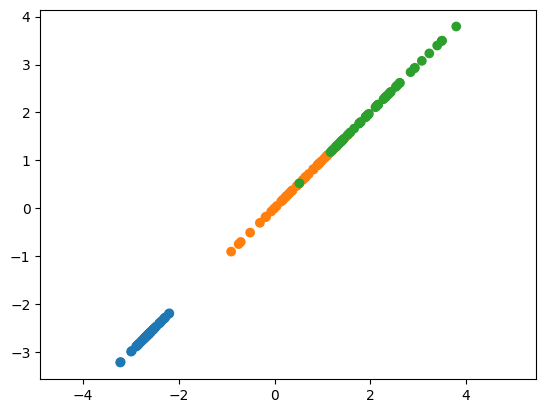
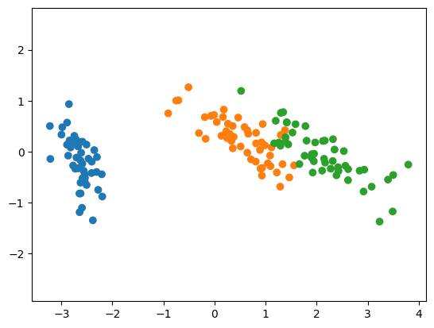

import numpy as np
import pandas as pd
import seaborn as sb
import matplotlib.pyplot as pltPrincipal Component Analysis
Exercise 1
Determine PCA of a 3x2 matrix
define a matrix
A = np.array([[1, 2], [3, 4], [5, 6]])
print(A)[[1 2]
[3 4]
[5 6]]First do it manually!
X = A[:,0]
Y = A[:,1]
print(X, Y)[1 3 5] [2 4 6]1. Subtract the mean of each variable
mean_sub_X = X - np.mean(X)
mean_sub_Y = Y - np.mean(Y)
mean_matrix = A - np.mean(A, axis=0)
print(mean_sub_X, mean_sub_Y)
print(mean_matrix)[-2. 0. 2.] [-2. 0. 2.]
[[-2. -2.]
[ 0. 0.]
[ 2. 2.]]2. Calculate the Covariance Matrix
var_X = np.sum(mean_sub_X**2)/(len(X)-1)
var_Y = np.sum(mean_sub_Y**2)/(len(Y)-1)
cov_XY = np.sum(mean_sub_X * mean_sub_Y)/(len(X)-1)
cov_matrix = np.array([
[var_X, cov_XY],
[cov_XY, var_Y]
])
print(cov_matrix)[[4. 4.]
[4. 4.]]3. Compute the Eigenvalues and Eigenvectors
eig_values, eig_vectors = np.linalg.eig(cov_matrix)
print(eig_values)
print(eig_vectors)[8. 0.]
[[ 0.70710678 -0.70710678]
[ 0.70710678 0.70710678]]4. project data of the original matrix to the new basis
prin_eig_vector = eig_vectors[:,0].reshape(-1,1)
projected_A = np.matmul(mean_matrix, prin_eig_vector)
print(projected_A)[[-2.82842712]
[ 0. ]
[ 2.82842712]]projected_matrix = np.matmul(mean_matrix, eig_vectors)
print(projected_matrix)[[-2.82842712 0. ]
[ 0. 0. ]
[ 2.82842712 0. ]]conclusion?
The Eigen values are 8 and 0 for two columns respectively, since the second eigen value is 0, there is no extra information in the second column aftert transformation, and hence can be dropped after performing the PCA transformation. And can consider only the first column.
Exercise 2
Ok Let’s do it again but for a larger matrix 20x5
Generate a dummy dataset.
X = np.random.randint(10,50,100).reshape(20,5)
print(X)[[42 21 35 14 10]
[20 41 26 46 31]
[36 37 19 24 20]
[37 14 14 17 12]
[42 14 38 17 29]
[46 35 27 42 35]
[19 34 32 12 49]
[37 19 30 22 39]
[14 46 34 40 43]
[13 10 44 25 33]
[30 48 27 24 36]
[12 39 45 49 24]
[11 36 34 10 14]
[14 36 15 38 44]
[40 29 13 15 42]
[44 39 17 21 26]
[17 20 26 14 48]
[38 34 48 10 40]
[39 37 42 48 14]
[42 27 28 18 44]]1. Subtract the mean of each variable
Subtract the mean of each variable from the dataset so that the dataset should be centered on the origin. Doing this proves to be very helpful when calculating the covariance matrix.
central_X = X - np.mean(X, axis = 0)2. Calculate the Covariance Matrix
Calculate the Covariance Matrix of the mean-centered data.
cov_mat = np.cov(central_X, rowvar= False)
print(cov_mat)[[165.08157895 -26.23157895 -28.11052632 -37.31052632 -33.65526316]
[-26.23157895 121.11578947 -7.32631579 66.95789474 13.08421053]
[-28.11052632 -7.32631579 111.90526316 16.56842105 -12.26842105]
[-37.31052632 66.95789474 16.56842105 178.53684211 -12.99473684]
[-33.65526316 13.08421053 -12.26842105 -12.99473684 156.66052632]]Note: the matrix is symmetrical
3. Compute the Eigenvalues and Eigenvectors
Now, compute the Eigenvalues and Eigenvectors for the calculated Covariance matrix.
eig_values, eig_vectors = np.linalg.eig(cov_mat)
# The above Eigen Vectors is column wise for each eigen value
# Converting it to Row wise
eig_vectors = eig_vectors.T
print(eig_values)
print(eig_vectors)[253.01066884 181.35485507 141.1469473 88.82152611 68.96600268]
[[-0.52753037 0.45832807 0.15014975 0.68623713 0.13483595]
[ 0.43675002 0.09465772 0.05213214 0.41635417 -0.79007644]
[-0.49880679 -0.41149083 0.64073475 -0.17512103 -0.37504492]
[-0.52633992 0.11431773 -0.66767148 -0.24624489 -0.45108313]
[-0.0715486 -0.77368084 -0.34410909 0.51422163 0.11603365]]Note: The Eigenvectors of the Covariance matrix we get are Orthogonal to each other and each vector represents a principal axis. A Higher Eigenvalue corresponds to a higher variability. Hence the principal axis with the higher Eigenvalue will be an axis capturing higher variability in the data.
4. Sort Eigenvalues in descending order
Sort the Eigenvalues in the descending order along with their corresponding Eigenvector.
desc_order = np.argsort(eig_values)[::-1]
eig_values = eig_values[desc_order]
eig_vectors = eig_vectors[desc_order]
print(eig_values)
print(eig_vectors)[253.01066884 181.35485507 141.1469473 88.82152611 68.96600268]
[[-0.52753037 0.45832807 0.15014975 0.68623713 0.13483595]
[ 0.43675002 0.09465772 0.05213214 0.41635417 -0.79007644]
[-0.49880679 -0.41149083 0.64073475 -0.17512103 -0.37504492]
[-0.52633992 0.11431773 -0.66767148 -0.24624489 -0.45108313]
[-0.0715486 -0.77368084 -0.34410909 0.51422163 0.11603365]]Note: Each column in the Eigen vector-matrix corresponds to a principal component, so arranging them in descending order of their Eigenvalue will automatically arrange the principal component in descending order of their variability. Hence the first column in our rearranged Eigen vector-matrix will be a principal component that captures the highest variability.
5. Select a subset from the rearranged Eigenvalue matrix
Select a subset of n first eigenvectors from the rearranged Eigenvector matrix as per our need, n is desired dimension of your final reduced data. i.e. “n_components=2” means you selected the first two principal components.
n_components = 2
desired_eig_vectors = eig_vectors[:2]
print(desired_eig_vectors)[[-0.52753037 0.45832807 0.15014975 0.68623713 0.13483595]
[ 0.43675002 0.09465772 0.05213214 0.41635417 -0.79007644]]Note: The final dimensions of X_reduced will be ( 20, 2 ) and originally the data was of higher dimensions ( 20, 5 ).
6. Transform the data
Finally, transform the data by having a dot product between the Transpose of the Eigenvector subset and the Transpose of the mean-centered data. By transposing the outcome of the dot product, the result we get is the data reduced to lower dimensions from higher dimensions.
projected_matrix = np.matmul(central_X, desired_eig_vectors.T)
print(projected_matrix)[[-2.08844995e+01 1.71428703e+01]
[ 2.33275256e+01 5.69006310e+00]
[-4.57773329e+00 1.14655567e+01]
[-2.22799056e+01 1.28706507e+01]
[-1.90217522e+01 2.87427279e+00]
[ 4.80631252e+00 1.17040271e+01]
[ 6.42642644e-01 -2.34739157e+01]
[-1.05141129e+01 -5.07223941e+00]
[ 2.74861549e+01 -8.01913353e+00]
[ 1.37345567e+00 -9.68678831e+00]
[ 6.98763100e+00 -2.33787436e+00]
[ 3.05988175e+01 9.77685579e+00]
[-1.18913037e-02 1.45630833e-01]
[ 1.88123905e+01 -1.15790063e+01]
[-1.44651211e+01 -8.98636706e+00]
[-9.43131532e+00 9.05508688e+00]
[-4.38214982e+00 -2.43626320e+01]
[-9.56403624e+00 -8.06357138e+00]
[ 1.29537954e+01 2.87078047e+01]
[-1.18562084e+01 -7.85129066e+00]]Exercise 3
Now, let’s just combine everything above by making a function and try our Principal Component analysis from scratch on an example.
Create a PCA function accepting data matrix and the number of components as input arguments.
def PCA(data, num_components):
# Finding the Centralised Matrix (Matrix - Column Mean)
central_X = data - np.mean(data, axis = 0)
# Finding the Co-Variance Matrix
cov_mat = np.cov(central_X, rowvar= False)
# Finding the Eigen Values and Eigen Vectors
eig_values, eig_vectors = np.linalg.eig(cov_mat)
# Eigen vectors are column wise, making them row wise
eig_vectors = eig_vectors.T
# Taking the Descinding order of Eigen Values
# and their corresponding Eigen Vectors
desc_order = np.argsort(eig_values)[::-1]
eig_values = eig_values[desc_order]
eig_vectors = eig_vectors[desc_order]
# Desired Eigen Vectors
desired_eig_vectors = eig_vectors[:num_components]
projected_matrix = np.matmul(central_X, desired_eig_vectors.T)
return projected_matrix, eig_valuesLet’s use the IRIS dataset to test our PCA function, and by the same way see if we can classify the dataset in the projected space
#Get the IRIS dataset
url = "https://archive.ics.uci.edu/ml/machine-learning-databases/iris/iris.data"
data = pd.read_csv(url, names=['sepal length','sepal width','petal length','petal width','target'])
data.head()| sepal length | sepal width | petal length | petal width | target | |
|---|---|---|---|---|---|
| 0 | 5.1 | 3.5 | 1.4 | 0.2 | Iris-setosa |
| 1 | 4.9 | 3.0 | 1.4 | 0.2 | Iris-setosa |
| 2 | 4.7 | 3.2 | 1.3 | 0.2 | Iris-setosa |
| 3 | 4.6 | 3.1 | 1.5 | 0.2 | Iris-setosa |
| 4 | 5.0 | 3.6 | 1.4 | 0.2 | Iris-setosa |
1. prepare the dataset & target set for classification
target = data.iloc[:,-1]
data = data.iloc[:,:-1]
print(data.head())
print(target.head()) sepal length sepal width petal length petal width
0 5.1 3.5 1.4 0.2
1 4.9 3.0 1.4 0.2
2 4.7 3.2 1.3 0.2
3 4.6 3.1 1.5 0.2
4 5.0 3.6 1.4 0.2
0 Iris-setosa
1 Iris-setosa
2 Iris-setosa
3 Iris-setosa
4 Iris-setosa
Name: target, dtype: object2. Apply the PCA function
reduced_data_2, eig_val_2 = PCA(data.to_numpy(), 2)
reduced_data_1, eig_val_2 = PCA(data.to_numpy(), 1)3. Create a Pandas Dataframe of reduced Dataset with target data
reduced_df1 = np.c_[reduced_data_1, target]
reduced_df1 = pd.DataFrame(reduced_df1)
reduced_df1| 0 | 1 | |
|---|---|---|
| 0 | -2.684207 | Iris-setosa |
| 1 | -2.715391 | Iris-setosa |
| 2 | -2.88982 | Iris-setosa |
| 3 | -2.746437 | Iris-setosa |
| 4 | -2.728593 | Iris-setosa |
| ... | ... | ... |
| 145 | 1.944017 | Iris-virginica |
| 146 | 1.525664 | Iris-virginica |
| 147 | 1.764046 | Iris-virginica |
| 148 | 1.901629 | Iris-virginica |
| 149 | 1.389666 | Iris-virginica |
150 rows × 2 columns
reduced_df = np.c_[reduced_data_2, target]
reduced_df = pd.DataFrame(reduced_df)
reduced_df| 0 | 1 | 2 | |
|---|---|---|---|
| 0 | -2.684207 | -0.326607 | Iris-setosa |
| 1 | -2.715391 | 0.169557 | Iris-setosa |
| 2 | -2.88982 | 0.137346 | Iris-setosa |
| 3 | -2.746437 | 0.311124 | Iris-setosa |
| 4 | -2.728593 | -0.333925 | Iris-setosa |
| ... | ... | ... | ... |
| 145 | 1.944017 | -0.187415 | Iris-virginica |
| 146 | 1.525664 | 0.375021 | Iris-virginica |
| 147 | 1.764046 | -0.078519 | Iris-virginica |
| 148 | 1.901629 | -0.115877 | Iris-virginica |
| 149 | 1.389666 | 0.282887 | Iris-virginica |
150 rows × 3 columns
4. Vizualize the data with one and two principal components
colors = {cat:color for cat,color in zip(target.unique(), ['tab:blue','tab:orange','tab:green','tab:red','tab:purple','tab:brown','tab:pink'])}
plt.scatter(reduced_df1[0], reduced_df1[0], c=reduced_df1[1].map(colors))
plt.axis('equal')
# plt.legend(title='color', handles=handles, bbox_to_anchor=(1.05, 1), loc='upper left')
plt.show()
colors = {cat:color for cat,color in zip(target.unique(), ['tab:blue','tab:orange','tab:green','tab:red','tab:purple','tab:brown','tab:pink'])}
plt.scatter(reduced_df[0], reduced_df[1], c=reduced_df[2].map(colors))
plt.axis('equal')
# plt.legend(title='color', handles=handles, bbox_to_anchor=(1.05, 1), loc='upper left')
plt.show()
5. Conclusion
print(np.cumsum(eig_val_2/eig_val_2.sum()))[0.92461621 0.97763178 0.99481691 1. ]As we can see, the first column after transformation will have 92.46% of the original data, and if we take the first two component of the eigen vectors set, and use those to generate the data, we can get 97.76% of the original data.